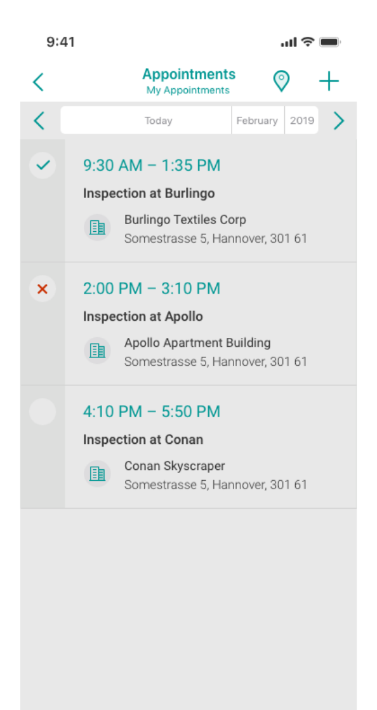
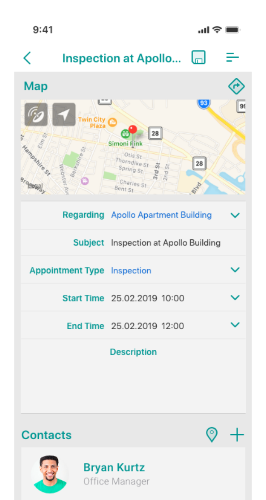
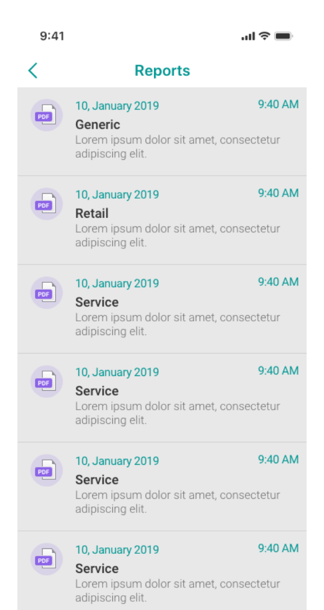
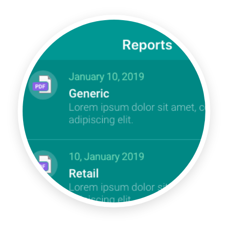
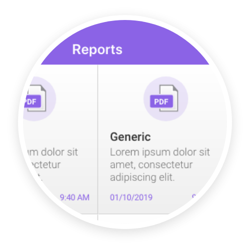
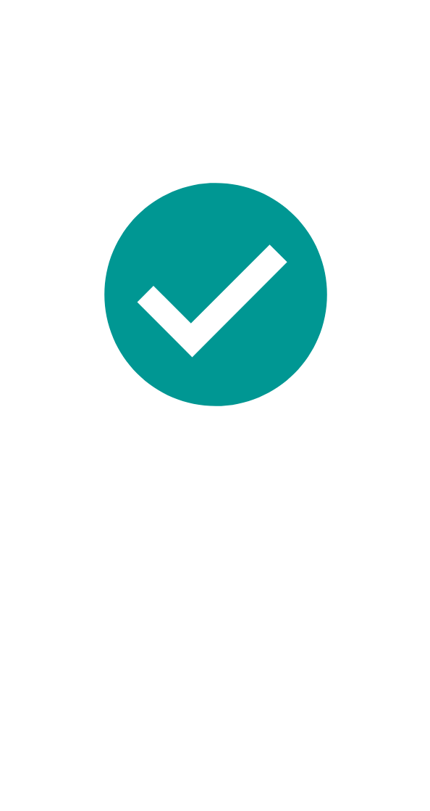

Meet Resco Inspections
Your expert in the field inspections &mda whether it is a machine repair, on-site inspection, or simply collecting customer's feedback.

Access your records
See your appointments, fill out the questionnaires, and generate reports, regardless the internet connection.



Customize further
If needed, modify the UI and app functionality the same way as any other Resco app.

Let the Inspections begin
Use the demo data, or connect to your organization to see your own data.